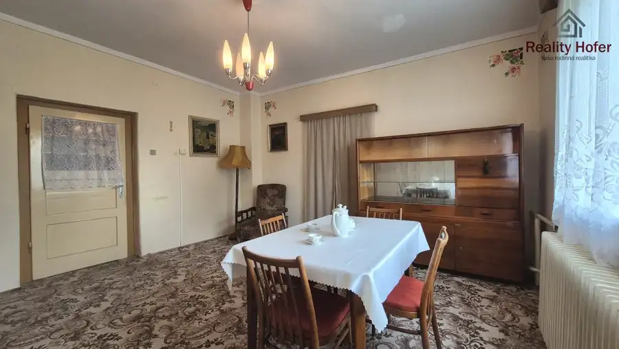
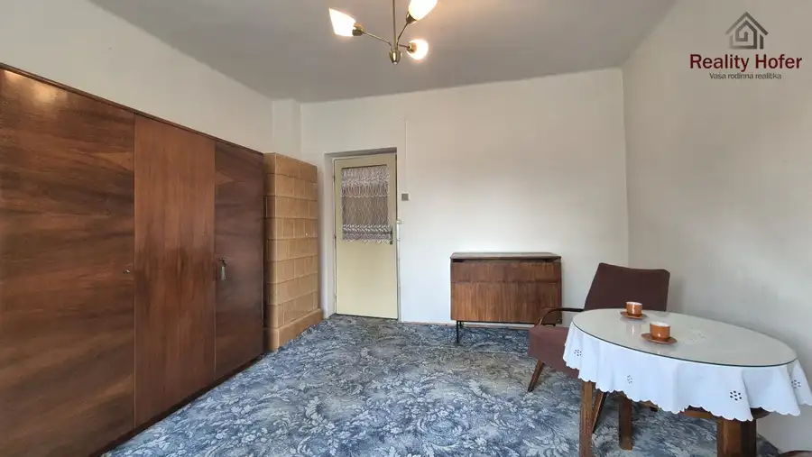
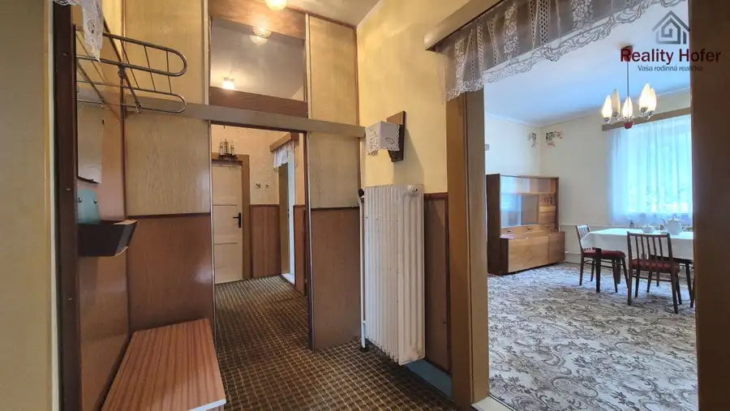
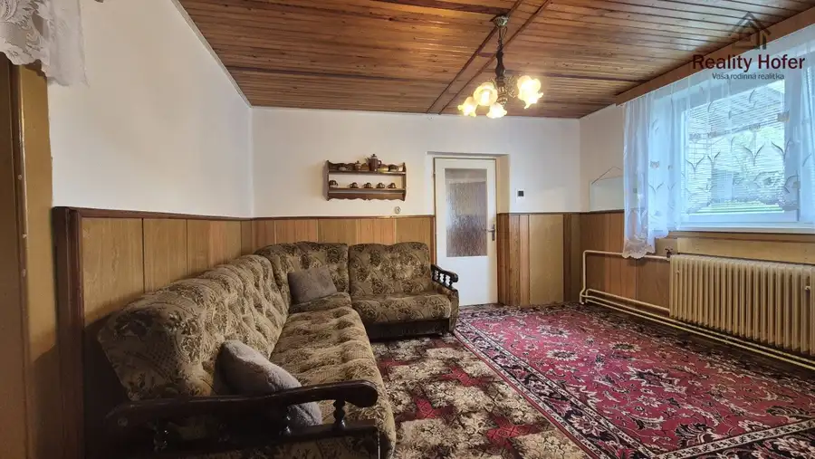

Starší rodinný dom, pozemok 918m2, Hermanovce, okr. Prešov
Hermanovce





- Plocha918 m²
- StavPôvodný stav
- VlastníctvoOsobné
O nehnuteľnosti
Reality Hofer ponúka na predaj starší rodinný dom so samostatnou garážou na 9 árovom pozemku v obci Hermanovce, 15 minút od Prešova. Dom má vidiecky vzhľad - pôvodné drevené zárubne a dvere (futrá), 2x funkčná kachľová pec v kuchyni a v izbe, štýlový retro nábytok.Je v pôvodnom, ale obývateľnom stave. Predpokladá sa však jeho rekonštrukcia, či prestavba. Je prízemný, čiastočne podpivničený. Dispozične je riešený ako starší dom + prístavba.Dispozícia: zádverie, vstupná chodba, kuchyňa, 4 x izba, kúpeľňa s WC, špajza, komora, Charakteristika domu:- stavebný materiál zmiešaný - tehla, vaľky, - strecha valbová - pálená škridla,- základy betónové, kombinované s kameňom, bez izolácie, plotňa betónová, - podlahy - drevené diľe, PVC, dlažba,- strop trámový, spodný záklop,- omietky štukové,- okná plastové izolačné 2sklo,- bez zateplenia (len dve strany sú zateplené polystyrénom 5cm),- kúrenie plynový kotol + kotol na pevné palivo - radiátory + kachľovcePosledná rekonštrukcia - 2018 (okná ), prístavba je z roku 1993, garáž dostavaná v roku 1987, pôvodný dom z roku 1957.Pozemok je mierne svahovitý o veľkosti 918 m2. Je kompletne oplotený. Na pozemku sa nachádza samostatne stojaca garáž, rôzne hospodárke budovy, dreváreň. Časť záhrady za domom je využívaná ako úžitková záhrada. IS - elektrina, plyn, vodovod, žumpa Obec Hermanovce ponúka spojenie pokojného vidieckeho bývania a výbornej dostupnosti do Prešova, Košíc i Popradu. S využitím diaľnice ste v Prešove za 15 minút. V samotnej obci je ZŠ, MŠ, potraviny CBA, pošta, kostol, kaštieľ na rodinné oslavy. Okolitá príroda poteší každého, kto má rád prechádzky v lese, hubárčenie, či turistiku.V cene kompletný právny servis a úhrada katastrálnych poplatkov spojených s prevodom. V prípade kúpy na hypotéku odporúčame pre zjednodušenie celého procesu využiť služby nášho hypotekárneho špecialistu, ktorý vám vybaví hypotéku v ktorejkoľvek banke podľa vašej preferencie.Viac informácií alebo obhliadku priamo na mieste získate od nášho makléra na čísle 0905 717 775 alebo mailom na hofer@realityhofer.sk
Parametre
- Druh
- Rodinný dom
- Dátum zverejnenia
- 08. 07. 2026
- Energetický certifikát budovy
- nie je
- Plocha pozemku
- 918 m²
- Počet izieb / miestností
- 4
- Rok poslednej rekonštrukcie
- 2018
- Rok výstavby
- 1957
- Stav nehnuteľnosti
- Pôvodný stav
- Terén pozemku
- Mierne svahovitý
- Typ
- Predaj
- Typ konštrukcie
- Zmiešaná
- Vlastníctvo
- Osobné
- Vybavenie
- Garáž, Pivnica, Sklad, Technická miestnosť
- Vykurovanie
- Lokálne
- Úžitková plocha
- 918 m²